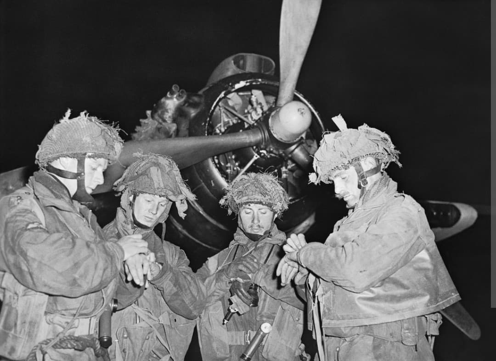
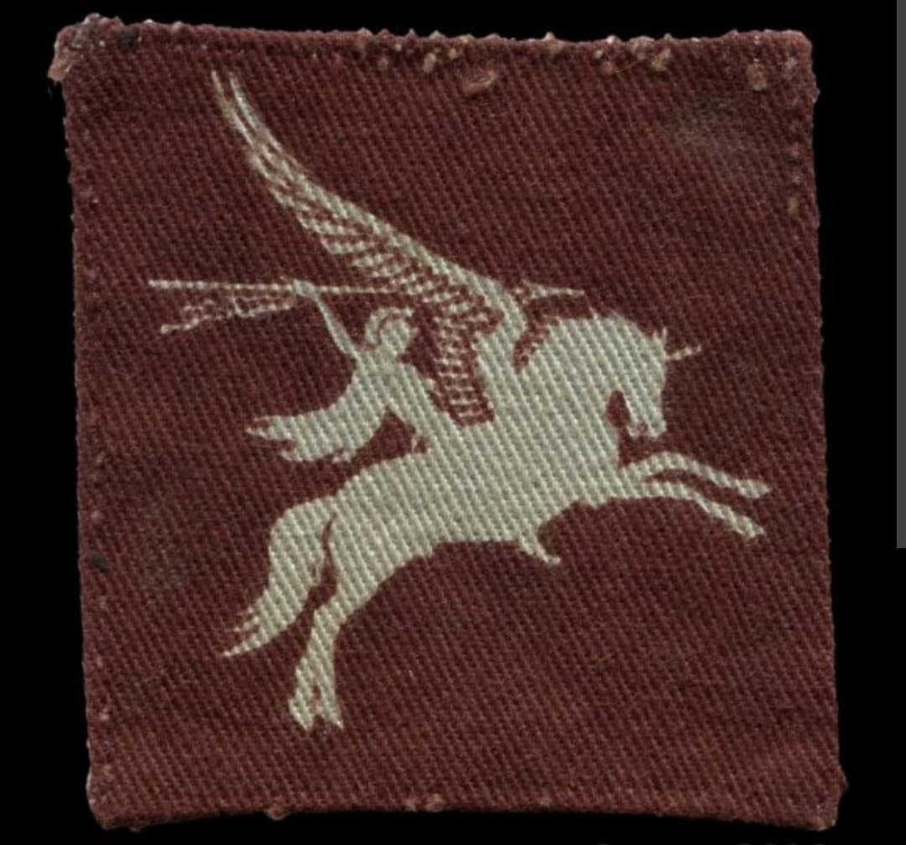
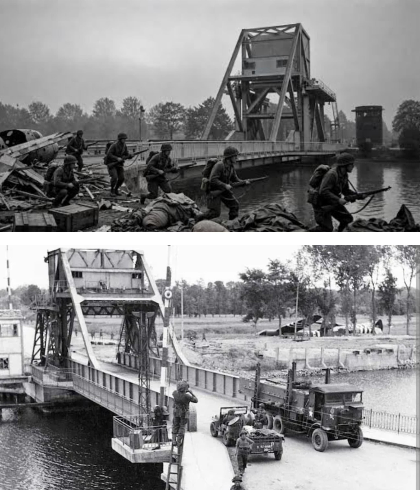

Les redoutables parachutistes de Sa Majesté : de la nuit légendaire de Pegasus Bridge en Normandie au franchissement aéroporté du Rhin

La 6th Airborne Division (6e division aéroportée britannique) est l'une des unités de troupes aéroportées d'élite les plus prestigieuses et redoutables de la Seconde Guerre mondiale.
Reconnaissables à leur béret amarante et à leur emblème ailé du Bellérophon chevauchant Pégase, les parachutistes et vélivoles (troupes en planeurs) de la division ont accompli des exploits légendaires, sécurisant le flanc oriental du débarquement de Normandie dès les premières minutes du 6 juin 1944.
Créée en mai 1943 sous le commandement du major général **Richard "Windy" Gale**, la division est mise sur pied pour compléter la 1st Airborne Division existante. Elle rassemble des bataillons de parachutistes chevronnés et des régiments d'infanterie aéroportée transportés par planeurs (comme les *Ox and Bucks*).
Son insigne distinctif met en vedette Bellérophon montant le cheval ailé Pégase, choisi pour incarner l'audace et l'art de combattre dans les airs avant de fondre sur l'ennemi.

Dans les toutes premières heures du **6 juin 1944**, les éléments de pointe de la 6th Airborne (notamment la compagnie du major John Howard à bord de planeurs Horsa) atterrissent avec une précision chirurgicale pour s'emparer par surprise des ponts stratégiques de Bénouville et Ranville (le futur **Pegasus Bridge**), protégeant ainsi le flanc est de la tête de pont alliée contre les contre-attaques blindées allemandes.
Parallèlement, les parachutistes sautent sur les zones désignées pour neutraliser la redoutable batterie de Merville et faire sauter les ponts de la Dive, remplissant l'ensemble de leurs missions au prix de violents combats.

Après des mois de combats en Normandie, la division est brièvement déployée en urgence dans les Ardennes à l'hiver 1944 pour contrer l'offensive surprise de la Wehrmacht.
Son ultime grand fait d'armes a lieu en mars 1945 lors de l'Opération Varsity, le plus grand assaut aéroporté de l'histoire en un seul jour, où elle participe aux côtés de la 17th US Airborne au franchissement massif du Rhin pour pénétrer au cœur de l'Allemagne.
Page du Musée HOP WW2 – Section Unités & Divisions